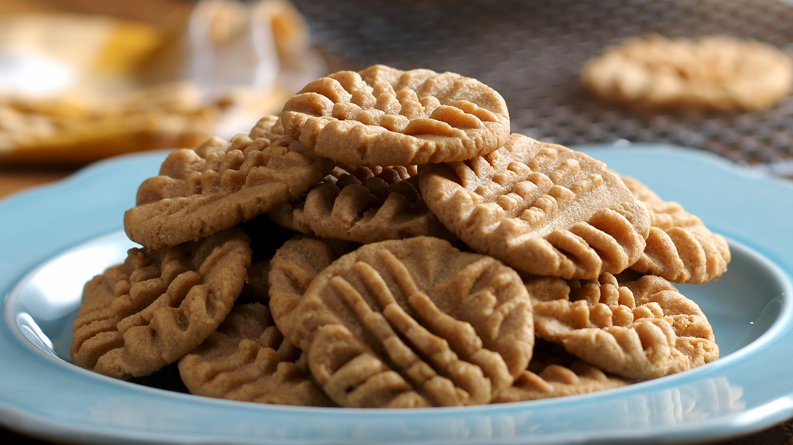

Peanut Butter Cookies

Description
The easiest cookies ever.
You won't believe how easy these are to make.
Ingredients
for 25 cookies
- 1 cup peanut butter (240 g)
- ½ cup sugar (100 g)
- 1 egg
Steps
- Preheat oven to 350ºF (180ºC).
- In a large bowl, mix together the peanut butter, sugar, and egg.
- Scoop out a spoonful of dough and roll it into a ball. Place the cookie balls onto a nonstick baking sheet.
- For extra decoration and to make them cook more evenly, flatten the cookie balls by pressing a fork down on top of them, then press it down again at a 90º angle to make a criss-cross pattern.
- Bake for 8-10 minutes or until the bottom of the cookies are golden brown.
- Remove from baking sheet and cool.
- Enjoy!